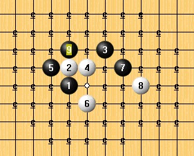

2012年全国五子棋锦标赛自评（茗弈—冯小峰）
#1 2012年全国五子棋锦标赛自评（茗弈—冯小峰）作者：茗弈妙手 发表时间：2012-10-8 17:25:50
2012年全国五子棋锦标赛已经结束了。在此撰文一篇，简单总结一下这几日的对局。
第一轮：
第一轮，冯小峰（黑）1：0赵翔宇，不换，5A=H6
考虑到对手是首次参加全国锦标赛的新人，谱量或有不足，因此我决定拿流星二打的某个变化来考白棋。不料对方用了走次强4的手段规避掉了我使用招式的可能性。 10、12、14连续三手白棋说明对手还是有一些防守强度的，此时15-23盖在白棋上端方为最佳选择，而实战15、17的两手活三交换实在是恶手。白18之后，黑甚至已略显被动。长考发现无论19-21还是19-39，黑棋都会面临巨大的被抓禁手的压力，因而19手选择了实战的位置。20手的选位略显保守，于是21手之后黑棋立刻感到如释重负。28手之后，白棋在上端并没有什么威胁，黑29选择跟在上面只是期望上端的攻击能对中部的主战场起到照应作用。然而黑31的随手拓展反而大大减慢了黑棋的步调。35手本来是打算白棋防守之后再虚盖D10，然而白36对黑活三的视而不见令黑棋幸福得太过突然。
黑9是我固有的习惯，而自16手至21手的走法也是我先前了解到的定式，然而24 手之后我突然发现黑棋有处处难以维持先手的感觉。赛后复盘艾显平提出21-29黑可以有很满意的优势，经查阅棋谱及简单拆解之后发现确是如此，原来自己赛前了解到的所谓“定式”21仅仅是个次强点。黑29是基本安全但却委屈之极的一手，好在我对白34早有准备——黑走实战35手的位置即可保下端完全无虞。不过对手的36手如此轻易的暂缓进攻却也在我意料之外。黑37立刻塞住白在上端的眠三，同时意图在上端攻击。此时白38主要有实战点以及I11两个选择：走实战点看起来凶险一点，但却能留下一个让黑棋头痛的活二：走I11白棋绝对安全，但对黑棋的威胁却极小。白棋大胆的选择了实战38，并且之后的40手说明白38手的选择是经过了充分的计算验证的——拆解表明白40是局部唯一防，祁观的算力果然精准深厚。44手之后，黑棋看似有VCF路线，但42、44的构型会在上端构成一个自然反的雏形，黑所谓的VCF并不成立。无奈地，黑简单地交换、稳固几手之后，47手便死心塌地转入防守。此时白棋任何常规的眠三、活二、局部攻击均能被黑棋兵来将挡水来土掩，白棋当然也意识到了这一点。长考之后，白棋走出了实战48手这种后续多端且令黑棋难以着力的进攻。黑棋在最后区区6分钟时限之内连出弱手，最终告负。而赛后拆解发现，即使时间充裕，黑棋都不容易找到万全的防守，这盘败给新科冠军的对局真的是令我心服口服。
在个人赛之前的团体赛中，祁观就被这个骗招骗过，而这盘棋我也不幸中招。这盘棋令我郁闷之处在于，我在比赛之前曾经查阅过这个骗招，但我只是匆匆查过14手塞在中间的攻法之后就再没查看其它14——而实战的14手才是这个骗招的精华之处。此时我后悔之极：我距离谱杀对手仅有一步之遥！一旦赛前查谱再仔细一点点，我也就能够极轻松的战胜对手了。回到实战中，我曾经思考过15-15，17-I6的手段，然而如此一来白棋可以轻易抓到黑棋的双活三禁手；而如果 15-15，17-I8，19-I6，白棋也可以通过F6反三简单的反死黑棋。无奈之下，我选择了实战17的手段，20之后黑棋败局已定。实际上，即使不知道棋谱，黑只要灵光一现般想到17-K10的提前解禁手段，后面的攻杀便也不成难度了。总之，无论从何种角度去看，这盘棋都是令我十分遗憾的——而这种情绪，或许也是我下一盘超低级失误的元凶之一。
对局面的熟练程度不够，以及上一盘消极情绪对我的影响，令我走出了实战11手这样的巨大漏招。当然，12手后黑也就可以投了。
第五轮，李洪斌0：1冯小峰（黑），交换，5A=10
否极泰来的一盘棋。虽然这盘棋略有粗糙之处，但无论如何，从这盘棋开始，我的状态开始复苏了。回到实战中，11手的想法非常简单，就是要跟对手在一个短定式局面中拼搏中盘，避开繁冗的瑞星定式变化。白16早早利用做四三盖住黑棋在中线的眠三，反映出对手在大局观方面出众的前瞻性——黑棋少了这个眠三之后，左边的攻击力就会因为缺少照应而大打折扣。而18手左右分断更是进一步消解了黑棋的先天优势。在白22盖住黑要点之后，黑获得了一个进攻先手，此时若23-33，白棋在上端是没有攻击先手的，因而白必须对黑进行跟防；不过白跟防黑棋之后，黑的优势也是很微妙的——黑虽然手握先手，但由于白在中线的眠三具有强烈的分断作用，因而黑棋的攻击是有不小难度的；而黑一旦攻击不得手，白棋的余味便堪称恐怖。因此，黑23选择跟防而非抢先，亦有其道理（虽然很不积极）。之后，白意欲在上端发动进攻，而黑的27、29看似目的单纯，实则埋伏着不小的阴谋。终于，黑33图穷匕见，以做VCF的手段强力抢先。而白34的手段并非有效——黑35之后即必胜。其实，白棋完全有守住这一轮进攻的可能：34-36即可局部唯一，此后双方各有攻势，依然基本平衡。只不过如若那样的话，便成了另一盘棋了。
第六轮，张宇鹏（黑）0：1冯小峰，不换，5A=6
白8的意图是避开主流变化，在短定式之后即可拼杀中盘。双方直到17手都是定式。之后白18脱谱变招亦无不可。22手似乎在兼顾性上差了一点——若23- J12，白棋尚需瞪起眼来仔细防守。实战黑23、25两手反映出对手对马步棋形的过分迷信一直对先手意识的缺失——白26利用活三占领要点之后，即可简单反先。而黑27更是不必要——白28马上可以利用黑棋的禁手弱点发动攻击。直至31手之前，黑棋防得虽不是太强，但31-33盖住白棋亦可暂时无虞。实战黑31脱先进攻的手段显然是因为没有算到白棋的VCT手段而造成的。之后白棋施展VCT即可取胜。
第七轮，冯小峰（黑）0.5：0.5洪士光，不换，5A=6
双方平稳过渡到20手之后，黑21便发动了进攻。之后的22、24没有走最强，原因是对手希望我的进攻会给白棋留下更多的余味。黑29做了一个很隐蔽的全盘 VCT，不过我也没指望以此骗杀——即使对手没有看到这个VCT，也不至于不针对黑棋进行防守。然而白棋以实战30的手段进行防守还是极其大胆的。之后我 31立刻发动猛烈攻击，此时黑棋线路丰富且复杂，我一度以为白棋无防了。然而实战白32的走法不仅防住了黑棋的杀，还相当兼顾。无奈之下，黑只得将注意力迁至别处。黑37手实际上是无杀的，白38似乎跟得过分小心了。之后黑棋借着先手优势在各处完成交换，至53手，局面已相当稳定。最终，在进行120多手的拼争之后，双方握手言和。
对手为了避开我的考招而走了次强4无可厚非，然而选择弱8便毫无必要了。之后，11-G6黑棋便可迅速取得大优（12-H7，13-F7），然而我在实战中并没有发现这个强变化，这反映出我的进攻还有相当大的不足。实战12之后，我恍然发现黑棋居然难以继续攻击了？此时黑棋很多看似是强攻的手段都是不成立的 ——比如15-K10一子通三，白只需16-24便可轻松化解，甚至还有反夺先手味道。长考之下，我终于找到了实战15的强攻手段（赛后拆解发现，这个 15非常接近地毯），此后的16、17两手皆为最强防与最强攻。18手此时是不能F7反先的，否则黑K11做VCF即可简明必胜。无奈之下白棋只得继续防守——18手依然是最强防。几经验算之后，我走出了19、21两手暴力攻击的手段，赛后拆解发现白22-24是唯一防点，但即使如此，黑继续在J9连消带打也会让白棋极端难受。实战白22为必败，黑23轻轻一点便地毯了。综上，这盘棋我虽然走出了11手的弱攻，但能走出15手这样几近地毯的强手，自我感觉也可以说是功大于过、基本满意了。
无论是华夏社团还是黄圣明，都是以谱量恐怖而著称的，给这样的对手留下疏星一打是相当不可取的。白10-11是此局面之下的定式，而实战10手虽然从实战角度来看是合理的，然而对方有庞大研究，便不可以此而论了。自13手开始似乎就已经存在黑地毯必胜了？这一点我无法肯定；然而从情理分析，对手应该是做足了功课的——如果黑19之后的构型无法取胜，白棋的余味是极其恐怖的，因此黑棋必须胜。实战20手怎么看怎么合理，然而所谓的合理在地毯结论的面前是如此的不堪一击。不过赛后拆棋发现，白20-26是个很强的防点，至于此后黑棋有没有必胜、如何去必胜，我就借棋评之机来请教各位谱库大神了。
最终：4胜1和4负积4.5分，名列第21。
［ 你就在我身边 于 2012-10-8 17:50:37 时花20金币送鲜花一朵］
［ 你就在我身边 于 2012-10-8 17:50:37 时花20金币送鲜花一朵］
［ 自来水 于 2012-10-8 17:58:55 时奖励此帖[金币加 100 威望加1］
［ 自来水 于 2012-10-8 17:59:20 时花20金币送鲜花一朵］
［ 自来水 于 2012-10-8 17:59:20 时花20金币送鲜花一朵］
［ 自来水 于 2012-10-8 17:59:20 时花20金币送鲜花一朵］
［ 自来水 于 2012-10-8 17:59:20 时花20金币送鲜花一朵］
［ 自来水 于 2012-10-8 17:59:20 时花20金币送鲜花一朵］
［ 茗弈宽容 于 2012-10-8 17:59:33 时奖励此帖[金币加 100 威望加1］
［ 消逝的雨 于 2012-10-8 18:17:22 时花20金币送鲜花一朵］
［ 消逝的雨 于 2012-10-8 18:17:22 时花20金币送鲜花一朵］
［ 消逝的雨 于 2012-10-8 18:17:22 时花20金币送鲜花一朵］
［ 消逝的雨 于 2012-10-8 18:17:22 时花20金币送鲜花一朵］
［ 消逝的雨 于 2012-10-8 18:17:22 时花20金币送鲜花一朵］
［ 消逝的雨 于 2012-10-8 18:17:22 时花20金币送鲜花一朵］
［ 消逝的雨 于 2012-10-8 18:17:22 时花20金币送鲜花一朵］
［ 消逝的雨 于 2012-10-8 18:17:22 时花20金币送鲜花一朵］
［ 消逝的雨 于 2012-10-8 18:17:22 时花20金币送鲜花一朵］
［ 消逝的雨 于 2012-10-8 18:17:22 时花20金币送鲜花一朵］
［ 消逝的雨 于 2012-10-8 18:17:22 时花20金币送鲜花一朵］
［ 暮雨迟 于 2012-10-8 18:33:31 时花20金币送鲜花一朵］
［ 逆刃 于 2012-10-8 18:44:57 时花20金币送鲜花一朵］
［ 逆刃 于 2012-10-8 18:44:57 时花20金币送鲜花一朵］
［ 逆刃 于 2012-10-8 18:44:57 时花20金币送鲜花一朵］
［ 逆刃 于 2012-10-8 18:44:57 时花20金币送鲜花一朵］
［ 逆刃 于 2012-10-8 18:44:57 时花20金币送鲜花一朵］
［ 天籁之琴 于 2012-10-8 18:54:20 时花20金币送鲜花一朵］
［ 天籁之琴 于 2012-10-8 18:54:20 时花20金币送鲜花一朵］
［ 天籁之琴 于 2012-10-8 18:54:20 时花20金币送鲜花一朵］
［ 天籁之琴 于 2012-10-8 18:54:20 时花20金币送鲜花一朵］
［ 天籁之琴 于 2012-10-8 18:54:20 时花20金币送鲜花一朵］
［ 天籁之琴 于 2012-10-8 18:54:20 时花20金币送鲜花一朵］
［ 天籁之琴 于 2012-10-8 18:54:20 时花20金币送鲜花一朵］
［ 天籁之琴 于 2012-10-8 18:54:20 时花20金币送鲜花一朵］
［ 天籁之琴 于 2012-10-8 18:54:20 时花20金币送鲜花一朵］
［ 天籁之琴 于 2012-10-8 18:54:20 时花20金币送鲜花一朵］
［ 华夏使者 于 2012-10-9 0:34:18 时花20金币送鲜花一朵］
［ 华夏使者 于 2012-10-9 0:34:18 时花20金币送鲜花一朵］
［ 华夏使者 于 2012-10-9 0:34:18 时花20金币送鲜花一朵］
［ 华夏使者 于 2012-10-9 0:34:18 时花20金币送鲜花一朵］
［ 华夏使者 于 2012-10-9 0:34:18 时花20金币送鲜花一朵］
［此帖子已被 有志青年 在 2012-10-9 12:50:17 编辑过］
［ 清风明月月 于 2012-10-9 20:20:51 时花20金币送鲜花一朵］
［ 清风明月月 于 2012-10-9 20:20:51 时花20金币送鲜花一朵］
［ 清风明月月 于 2012-10-9 20:20:51 时花20金币送鲜花一朵］
［ 清风明月月 于 2012-10-9 20:20:51 时花20金币送鲜花一朵］
［ 清风明月月 于 2012-10-9 20:20:51 时花20金币送鲜花一朵］
［ 清风明月月 于 2012-10-9 20:20:51 时花20金币送鲜花一朵］
［ 黛瑂 于 2012-10-11 12:16:13 时花20金币送鲜花一朵］
［ 华夏小宝 于 2012-10-28 23:59:43 时花20金币送鲜花一朵］
［ 梦醉南天 于 2012-10-31 19:40:26 时花20金币送鲜花一朵］
#2 Re:2012年全国五子棋锦标赛自评（茗弈—冯小峰）作者：自来水 发表时间：2012-10-8 18:00:54
 先砸你点鲜花威望，回头慢慢看
先砸你点鲜花威望，回头慢慢看#3 Re:2012年全国五子棋锦标赛自评（茗弈—冯小峰）作者：茗弈宽容 发表时间：2012-10-8 18:03:16
妙手是我眼中最棒的~以前是,现在是,以后仍然是!加油臭小子! 希望你越来越香~
希望你越来越香~#4 Re:茗弈妙手【==2012年全国五子棋锦标赛自评（茗弈—冯小峰）==】作者：【茗弈】恶魔宝贝 发表时间：2012-10-8 18:48:04
==============================
此帖内容被屏蔽!
==============================
此帖被茗弈宽容 屏蔽于 2012-10-9 14:19:14并-20金币
#5 Re:【茗弈】恶魔宝贝【==Re:茗弈妙手【==2012年全国五子棋锦标赛自评（茗弈—冯小峰）==】==】作者：天籁之琴 发表时间：2012-10-8 18:56:12
楼上的恶魔 你加我QQ963982629 ，我问他要了几遍也不给我#6 Re:2012年全国五子棋锦标赛自评（茗弈—冯小峰）作者：消逝的雨 发表时间：2012-10-8 21:25:54
 我把最后一局的后续毯掉了。
我把最后一局的后续毯掉了。#7 Re:2012年全国五子棋锦标赛自评（茗弈—冯小峰）作者：屏蔽 发表时间：2012-10-8 21:29:31

黑9之后白10是唯一的（刚拆的）。基本思路都是利用右边的一点小优势对白棋调虎离山，然后在左边强行做出形状暴力进攻取胜。
对于LZ的疑问，30后，31-E6可以必胜。
另一个重要的分支是白10跳三：
这里黑15可以强行对攻至必胜。
1983年第21期全日本连珠名人战决赛，中村茂流星执黑对富森滋，14手同型变化后下的15-I8略微柔和，虽然也是很有压迫性的一手，但留下了16-G10的强防，这之后暂时没有找到黑胜的方法。不过必胜的黑15思路也就是从这盘棋里找到的。
最后谈谈这个局面的一些情况。黑7的选择在本次山口论坛赛中出现很多次了，8直接挡活二的两个点最后都是黑棋控制外围，白棋受虐，不过8活三后下挡活二倒是很有意思的一手。如最上图黑9之后，白10活三，黑棋上挡普通，下挡占据外势较为有利。白8直接活三的区别就在于黑棋只能上挡。
附最上图棋谱：
 疏星强9.rar
疏星强9.rar［ 消逝的雨 于 2012-10-8 21:34:15 时花20金币送鲜花一朵］
［ 消逝的雨 于 2012-10-8 21:34:15 时花20金币送鲜花一朵］
［ 消逝的雨 于 2012-10-8 21:34:15 时花20金币送鲜花一朵］
［ 茗弈妙手 于 2012-10-9 9:00:15 时花20金币送鲜花一朵］
［ 茗弈妙手 于 2012-10-9 9:00:15 时花20金币送鲜花一朵］
［ 茗弈妙手 于 2012-10-9 9:00:15 时花20金币送鲜花一朵］
［ 茗弈妙手 于 2012-10-9 9:00:15 时花20金币送鲜花一朵］
［ 茗弈妙手 于 2012-10-9 9:00:15 时花20金币送鲜花一朵］
［ 茗弈妙手 于 2012-10-9 9:00:15 时花20金币送鲜花一朵］
［ 茗弈妙手 于 2012-10-9 9:00:15 时花20金币送鲜花一朵］
［ 茗弈妙手 于 2012-10-9 9:00:15 时花20金币送鲜花一朵］
［ 茗弈妙手 于 2012-10-9 9:00:15 时花20金币送鲜花一朵］
［ 茗弈妙手 于 2012-10-9 9:00:15 时花20金币送鲜花一朵］
［ 华夏小宝 于 2012-10-28 23:59:18 时花20金币送鲜花一朵］
#8 Re:2012年全国五子棋锦标赛自评（茗弈—冯小峰）作者：掌棋宣传员 发表时间：2012-10-8 21:56:04
21,入段了吧~#9 Re:2012年全国五子棋锦标赛自评（茗弈—冯小峰）作者：茗弈妙手 发表时间：2012-10-9 9:03:45
TO 7楼：非常非常感谢指点！
TO 8楼：去年我拿的是15名，你要让我今年降段么
#10 Re:2012年全国五子棋锦标赛自评（茗弈—冯小峰）作者：茗弈妙手 发表时间：2012-10-9 12:12:02
TO 本论坛管理员：
通过郑秋老师，我得到了第七轮对阵洪士光的全谱，能否帮我将全谱编辑到文章当中？（棋评文字部分不必更改，“棋谱不全”四个字倒是可以去掉了）
以下为IWZQ代码：
h8h9j10i9i8g9j9j8h10k10f9e8g12f11e12f12f13d11e11e13g6h7f6f7e6d6g7g5k9l8h12i13i12h11i6h6f4g4g11g13l6i5j6k5j5j4k4m6d8m8l9m9m10k11l10k12f10e9i10g10k13n11n8d4l5l3h3k6c5c9c10f3m5l13m12g2d5a9e5b5b9d12b10d10d13a4c4e2g3h2f2k2j3b7d7c8i2h1g1b3c3d1h5k3l2c2m11m14j11j12g15b12c11n10n12o13b4n5m4l7k7k8o4n3l4n4n6l14k14
#11 Re:2012年全国五子棋锦标赛自评（茗弈—冯小峰）作者：华夏小宝 发表时间：2012-10-31 17:33:50
认真学习了第八轮的流星棋谱和解说，表示收获很多。呵呵，谱已经牢记于脑子里了，哈哈哈。
黑25，感觉很高级的样子。呵呵。
#12 Re:2012年全国五子棋锦标赛自评（茗弈—冯小峰）作者：茗弈初学者 发表时间：2012-11-6 17:00:48
天啊，为什么我送不了花花啊！#13 Re:2012年全国五子棋锦标赛自评（茗弈—冯小峰）作者：漁民 发表时间：2012-12-6 11:11:52
 厉害
厉害